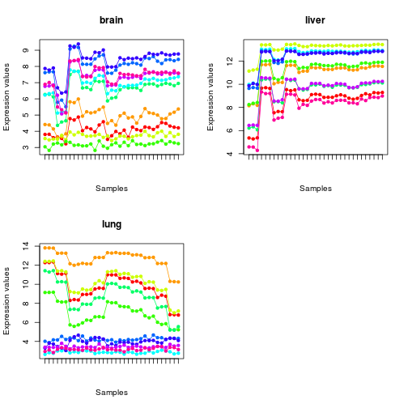
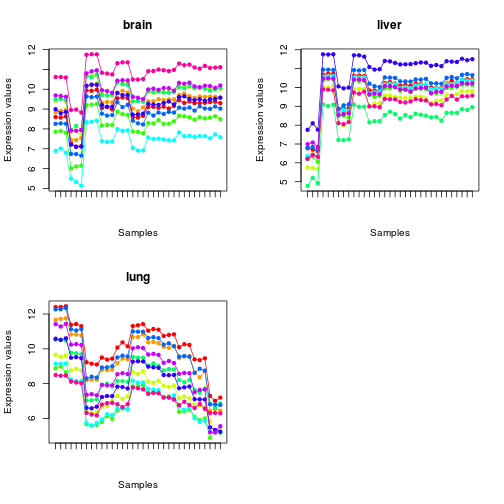

DSA Algorithm: Digital Sorting Algorithm
##################################################### Sample deconvolution analysis with DSA in CellMix##################################################### load benchmark datax <- ExpressionMix('GSE19830', verbose=TRUE)Loading dataset 'GSE19830' ... OKdim(x)Features Samples Components 31099 42 3annotation(x)[1] "rat2302.db"# extract mixed samplesmix <- mixedSamples(x)# load TIGER marker listml <- MarkerList('TIGER')mlnames(ml)[1] "bladder" "blood" "bone" "bone_marrow" [5] "brain" "cervix" "colon" "eye" [9] "heart" "kidney" "larynx" "liver" [13] "lung" "lymph_node" "mammary_gland" "muscle" [17] "ovary" "pancreas" "peripheral_nervous_system" "placenta" [21] "prostate" "skin" "small_intestine" "soft_tissue" [25] "spleen" "stomach" "testis" "thymus" [29] "tongue" "uterus"# select markers for the tissues present in the mixturebasisnames(x)[1] "Brain" "Liver" "Lung"ml <- ml[c('brain', 'liver', 'lung')]summary(ml)# convert to match annotationsmlx <- convertIDs(ml, mix, verbose=TRUE)# Converting 868 markers from Unigene (org.Hs.eg.db) to Annotation (rat2302.db) ... OK [261/868 (1:1)] # Processing 868 markers from Unigene (org.Hs.eg.db) to Annotation (rat2302.db) ... OK [261/868 (1:1)]summary(mlx)# QC on markers from their expression patterns in mixed samplesprofplot(mlx[,1:10], mix)Warning message: 'x' is NULL so the result will be NULL Warning message: 'x' is NULL so the result will be NULL Warning message: 'x' is NULL so the result will be NULL
# filter out poor markers using SCOREM (based on linear-scale expression)mlsc <- extractMarkers(mlx, expb(mix, 2), method='SCOREM', alpha=10^-12)summary(mlsc)# expresison patterns are more correlatedprofplot(mlsc[,1:10], mix)Warning message: 'x' is NULL so the result will be NULL Warning message: 'x' is NULL so the result will be NULL Warning message: 'x' is NULL so the result will be NULL
# apply DSA using all markersres <- ged(mix[mlsc,], mlsc, 'DSA', verbose=TRUE)Using ged algorithm: “DSA” Estimating basis and mixture coefficients matrices from marker features [DSA] Using 113/113 markers to estimate cell proportions: brain liver lung 17 81 15 Checking data scale ... NOTE [log] Converting data to linear scale ... OK [base: 2] Computing proportions using DSA method ... OK Estimating basis matrix from mixture coefficients [qprog] Not using any marker constraints Timing: user system elapsed 1.772 0.036 1.813 GED final wrap up ... OK# plot against true proportionsprofplot(mix, res)